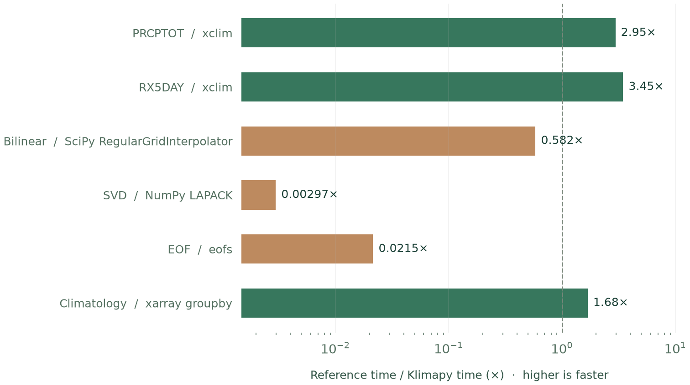

验证与效率
与社区算法的一致性
将相同数据、单位、日历、基准期和缺测规则输入 Klimapy 与社区算法，比较数值误差。比较的是统一口径下的结果，不把不同默认参数产生的差异直接判为错误。
下表为效率测量所用六个任务的一致性结果。
| 任务 | 对照算法 | 最大绝对误差 | 允许误差 |
|---|---|---|---|
| PRCPTOT | xclim | 0 | rtol=1e-8, atol=1e-8 |
| RX5DAY | xclim | 0 | rtol=1e-8, atol=1e-8 |
| 双线性插值 | SciPy RegularGridInterpolator | 0 | rtol=1e-8, atol=1e-8 |
| SVD | NumPy LAPACK | 5.91e-12 | rtol=1e-8, atol=1e-8 |
| EOF | eofs | 8.19e-12 | rtol=1e-8, atol=1e-8 |
| 月气候态 | xarray groupby | 0 | rtol=1e-8, atol=1e-8 |
以上六个任务均在允许误差内。这不代表所有指标、所有日历或所有数据规模都已与其他软件完全一致。
计算效率

倍数定义为 对照算法耗时 ÷ Klimapy 耗时。大于 1 表示 Klimapy 更快，小于 1 表示更慢；图中虚线为相同耗时。
| 任务 | Klimapy / ms | 对照算法 / ms | 耗时比 |
|---|---|---|---|
| PRCPTOT | 1.822 | 5.382 | 2.95× |
| RX5DAY | 1.905 | 6.577 | 3.45× |
| 双线性插值 | 0.113 | 0.066 | 0.582× |
| SVD | 280.091 | 0.832 | 0.00297× |
| EOF | 292.889 | 6.286 | 0.0215× |
| 月气候态 | 1.579 | 2.654 | 1.68× |
本次 PRCPTOT 和 RX5DAY 分别约快 2.95 倍和 3.45 倍。小型稠密矩阵的 SVD 与 EOF 目前慢于 NumPy 和 eofs，双线性插值也未体现优势。这些结果只适用于下述任务和硬件，不代表所有工作流或大型文件的整体性能。
测量设置
测量日期：2026-10-29。硬件：Intel(R) Core(TM) i5-14600K，Linux x86_64。输入为连续 731 日、6×8 格点的降水数据切片；双线性插值使用前 30 日，其余任务使用完整切片。月气候态对照使用两个明确的基准年。
每项在单线程下预热 2 次，正式运行 7 次并取中位数。计时排除导入、进程启动和文件读取，保留公共接口的分配与结果组织成本；双线性插值包含网格权重构建。一致性检查与计时均基于同一份已载入内存的数组。
测试环境
一致性检查与测量使用以下第三方库：NumPy、xarray、xclim、SciPy 和 eofs。